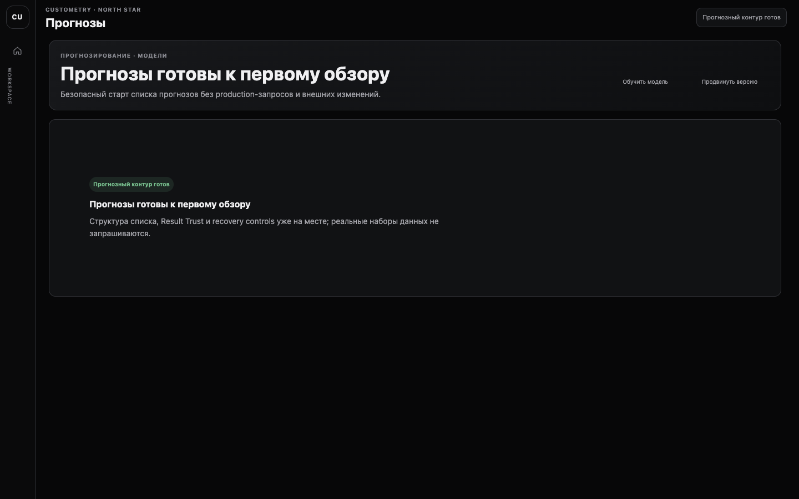
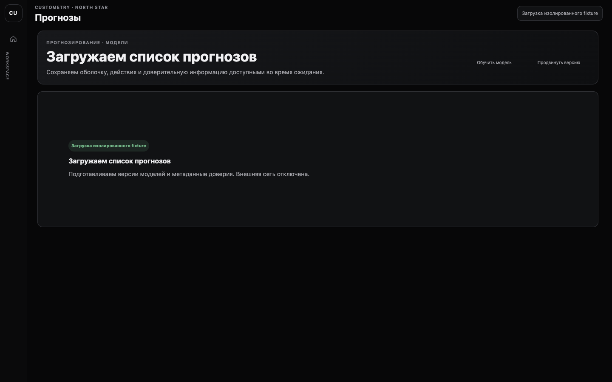
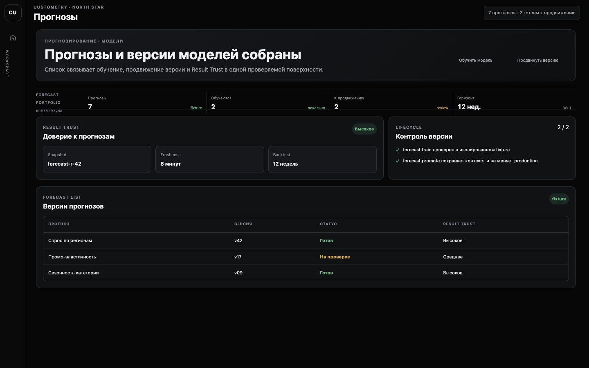
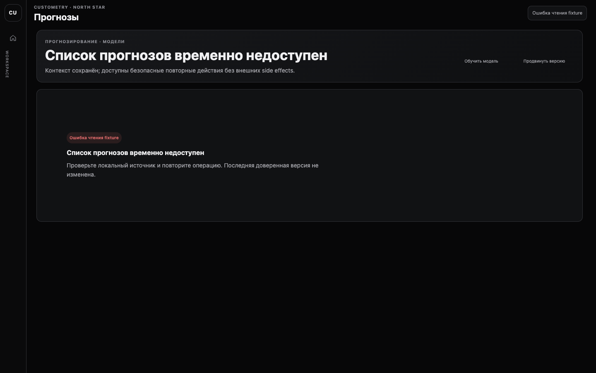
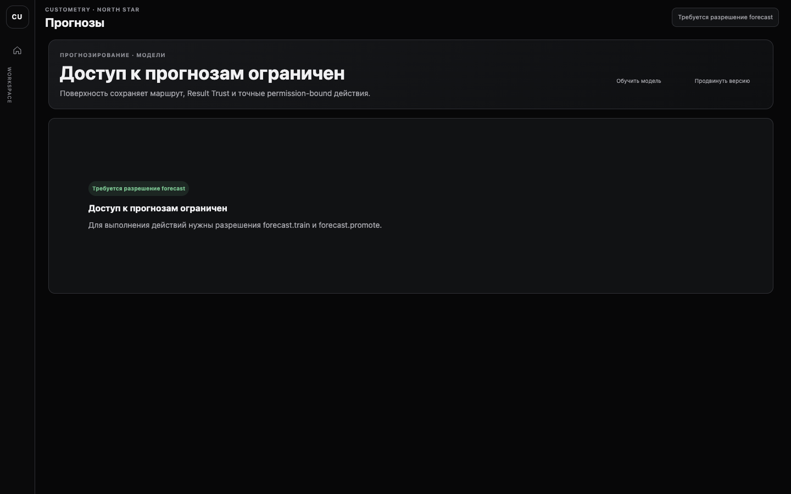
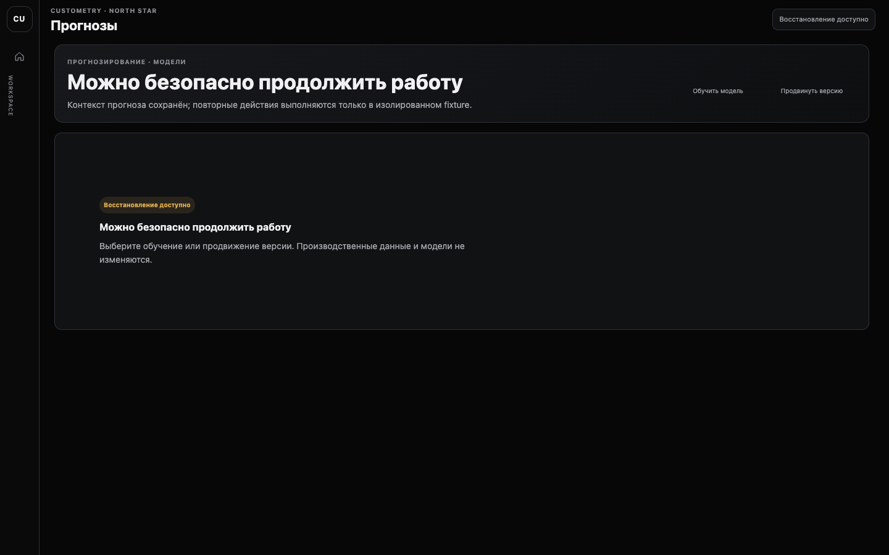

initialПрогнозы готовы к первому обзоруПрогнозный контур готовscreen acceptance · passedstandard conformance · passed
Шесть обязательных состояний forecast-list контракта: компактная Graphite shell, явный Result Trust, две source-bound fixture-команды и адаптивный Web 768–1920.





